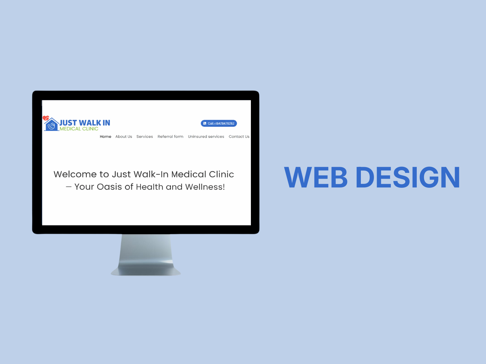
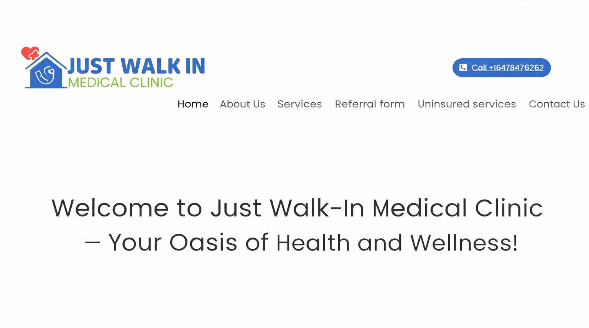
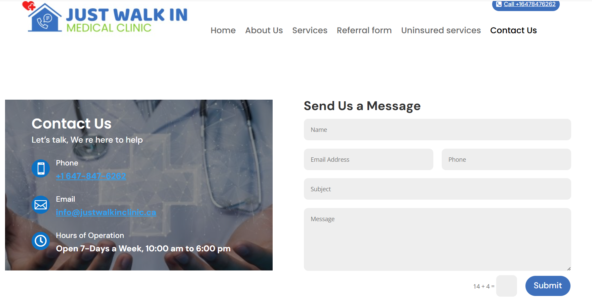
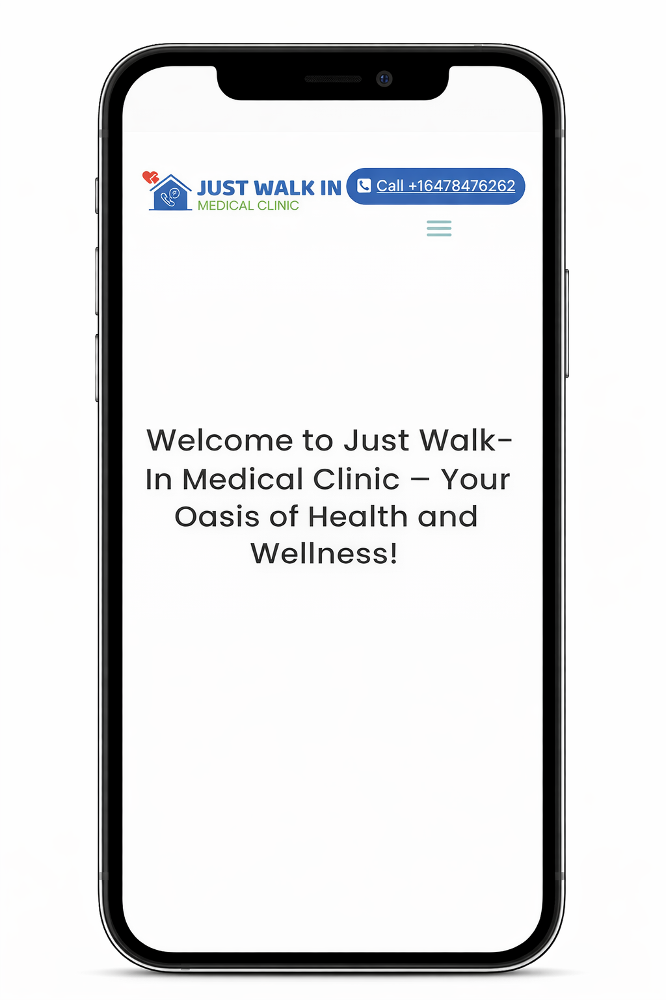

← Back to selected work
Client Work · Web Design
Just Walk-In Clinic
I rebuilt the client’s existing clinic website in WordPress, improved its layout and responsive presentation, and delivered it in under two weeks.

Client website rebuilt in WordPress.
The client provided an existing website as a starting point. I rebuilt the site in WordPress, refined the page structure and presentation, and delivered the completed website in under two weeks.
Project highlight
Real client work with a defined deadline, direct client communication and a live website that I continued to support after delivery.
Desktop experience


Responsive presentation
